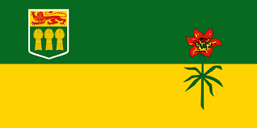

This page is a short timeline of 5 events/historical
moments in Sask history
1905: September 1st 1905 was the date that the provinces of Saskatchewan and Alberta
joined the Canadian Confederation, this was because the government at this time thought that
the Northwest Territories would have been too big to manage, so they split the land into the
2 provinces.
Fun Fact: The city of Regina has been around since 1903, and became the capital after
Saskatchewan joined the Confederation
World Wars: During the first World Wars, Saskatchewan had played a major role in food production
for Canadian soldiers and other allied forces, and the University of Saskatchewan had assisted in
the reaserch of "crop rust."
Fun Fact Mary Greyeyes Reid was the first Native American woman to join the Canadian
Armed Forces in 1942.

1969: was the year when Saskatchewan adopted its current flag, with the dark green on
top to represent the beautiful forests up north, and yellow on the bottom to represent the rich
feilds of canola, wheat, and other grains that are grown down south of he province.
Fun Fact:September 22nd is Saskatchewan Flag Day,
the same day the flag was designed in 1969
1997: This was when the Muscowequan Residential School school had closed in Saskatchewan.
Since that year, the school is now a historical site in Saskatchewan and is one of the last standing
residential schools in Canada
2007: This was when the company of Saskatchwan Wheat Pool closed down. From 1923 to 2007
Sask Wheat Pool was the largest grain ahndling operation in all of Saskatchewan, having nearly 4000
employees and 1250 grain elevators across the province.
Fun Fact: Around 275 of these elevators still stand today as monuments of of Saskatchewan's
agricultural and economic history